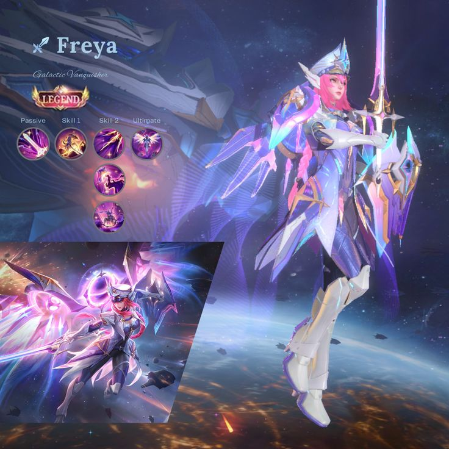
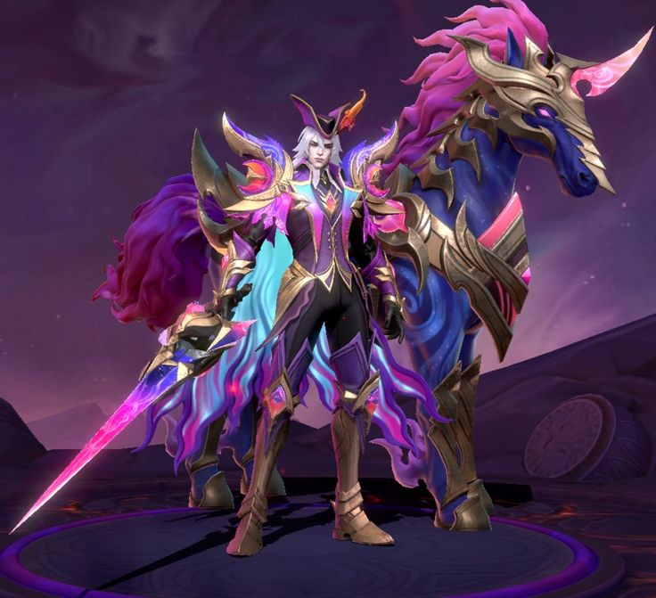
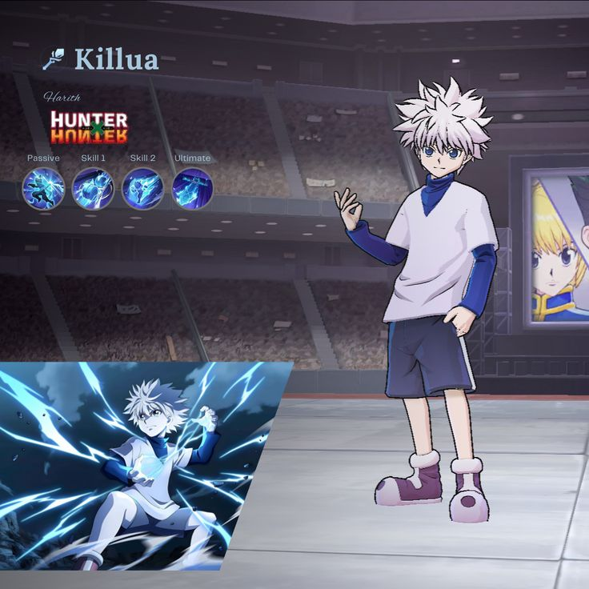

Mobile Legends: Bang Bang
Início
Sobre o Jogo
Heróis
Skins
Gameplay
Trilha Sonora
Dicas e Estratégias
Torneios
Cadastro
FAQ
Contato
Galeria de Skins
Confira algumas das skins mais populares de Mobile Legends.

Skin Legend da Freya: "Conquistadora Galáctica"

Skin Épica do Leomord: "Conde dos Pesadelos"

Skin "Killua" do Harith (Collab MLBB x Hunter x Hunter)